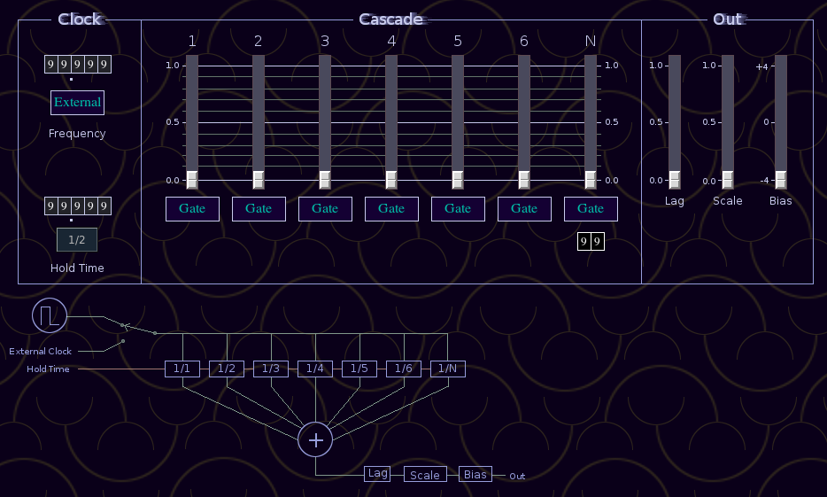
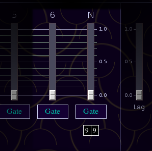

Cascade uses frequency dividers to generate complex control signals. A master clock (either internal or external) frequency is divided by 1,2,3,4,5 and 6. The final divider has an adjustable quotient between 1 and 99. Outputs are provided for each divider output and the combined signal.
The clock section has two general areas. At the top are controls for clock source and frequency.
Frequency tumbler, sets internal
clock frequency.
External button, switches between internal and external clock
source.
The bottom section has controls for the divider hold time. The hold time is the period in seconds the divider output stays high after it is activated. The hold time control is for the divide by 1 output, all other dividers are scaled appropriately.
Hold Time tumbler
1/2 button, Sets hold time to 1/2 the period of the internal clock.
The Cascade section holds controls for the mix and gate status of each divider. With exception of the divide by n quotient, these controls only effect the combined output, not the individual pule outputs.

Slider, divider output amplitude.
Gate button, Enable divider output to be gated by external control
signal.
2 digit tumbler, sets divide by n quotient between 1 and 99. A
value of 0 is promoted to 1.
The Out section holds additional controls for modifying the combined signal. These controls have no effect on the individual divider outputs."
Lag, lag time
Scale, output scale factor.
Bias, fixed value added to output.